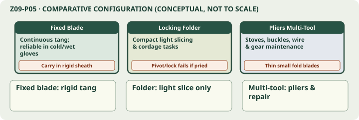

Z09-P05 · Tools and construction · New manuscript
Compare fixed-blade knives, folding knives and multi-tools
Match blade tang strength, lock limits and compact utility tools to expected field tasks without overloading light mechanisms.
When it applies · Choosing a primary cutting or repair tool for day hikes, backpacking, vehicle kits or home emergency kits.
Equipment · Fixed-blade knife with rigid sheath, locking folding knife or pliers-based multi-tool.

Actions
- Choose a sturdy modest fixed-blade knife when repeated wood prep or wet/cold gloved handling makes pivot grit and folding-lock failure a concern.[K01, K02, ED]
- Choose a locking folding knife strictly for light slicing, cord cutting and food/repair tasks—recognizing that pivot pins and locks are mechanical weak points under sideways twist or batoning.[K01, K02, ED]
- Choose a pliers-based multi-tool when gear maintenance (zippers, stove nuts, wire, small screws, pot gripping) is the main need, knowing small fold-out blades have narrow grips and thin geometry.[K07, K01, ED]
Failure recognition · Baton-hammering a folding pocket knife through thick oak or prying stubborn stove parts with a thin knife tip instead of pliers.[K02, K07]
Verify · Confirm the carried blade or multi-tool fits the actual tasks planned, opens safely and stores in a secure sheath or pouch.[K01, K02, K07, ED]
Stop or change course · Never rely on a non-locking slip-joint blade for heavy push cuts or wet gloved work; stop and change tools whenever a blade flexes or binds.[K01, K02]
Evidence and editorial notes
- K01 · OSHA · Hand and Power Tools Safety and Health Topics (current web edition)
- Section: Hand Tools > General Safety Rules · Conditions: Use of knives, saws, axes, hammers and hand tools
Support: Keep hand tools in good condition, use the right tool for the job, examine each tool for damage before use, operate according to instructions and wear appropriate personal protective equipment.
Limitations: General occupational rules do not replace task-specific forestry or field-tool training. · Conflicting evidence: None; baseline tool safety framework.
Editorial note: Anchors tool selection, pre-use inspection and operating boundary cards in Z09. · Specialist reviewer: Tool safety and occupational safety
Primary source · checked 2026-11-24 - K02 · OSHA · Hand and Power Tools (OSHA 3080) (agency PDF)
- Section: Hand Tools > Knives, Chisels, Impact and Wrenches · Conditions: Manual cutting, striking and prying operations
Support: Direct cutting blades away from the body and bystanders, never use cracked wooden handles or mushroomed striking heads, and do not substitute wrenches or blades as pry bars.
Limitations: Does not specify material tensile ratings for improvised handles. · Conflicting evidence: None; directly informs safe cutting and impact-tool failure cards.
Editorial note: Prevents blade slip, splintered-handle and spalling-metal injuries. · Specialist reviewer: Tool safety and wilderness medicine
Primary source · checked 2026-11-24 - K07 · NPS · Ten Essentials (current web edition)
- Section: Repair Kit and Tools · Conditions: Field equipment repair during backcountry travel
Support: Carry a route-appropriate repair kit (duct/gear tape, multi-tool, cordage, patch supplies) matched to shelter, pack, stove and water gear; verify compatibility before departure.
Limitations: Field patches restore temporary function and do not restore full original storm or load ratings. · Conflicting evidence: None; aligns with E02 and E20.
Editorial note: Grounds field-repair kits, temporary patches and equipment failure limits. · Specialist reviewer: Field equipment safety
Primary source · checked 2026-11-24
Source lineage · OSHA 3080 and NPS Ten Essentials; new manuscript · Classification · New manuscript.